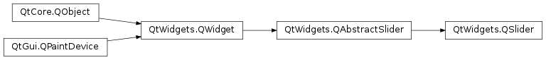
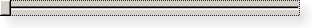

QSlider¶
Synopsis¶
Functions¶
- def
initStyleOption(option) - def
setTickInterval(ti) - def
setTickPosition(position) - def
tickInterval() - def
tickPosition()
Detailed Description¶
The
PySide2.QtWidgets.QSliderwidget provides a vertical or horizontal slider.The slider is the classic widget for controlling a bounded value. It lets the user move a slider handle along a horizontal or vertical groove and translates the handle’s position into an integer value within the legal range.
PySide2.QtWidgets.QSliderhas very few of its own functions; most of the functionality is inPySide2.QtWidgets.QAbstractSlider. The most useful functions arePySide2.QtWidgets.QAbstractSlider.setValue()to set the slider directly to some value;PySide2.QtWidgets.QAbstractSlider.triggerAction()to simulate the effects of clicking (useful for shortcut keys);PySide2.QtWidgets.QAbstractSlider.setSingleStep(),PySide2.QtWidgets.QAbstractSlider.setPageStep()to set the steps; andPySide2.QtWidgets.QAbstractSlider.setMinimum()andPySide2.QtWidgets.QAbstractSlider.setMaximum()to define the range of the scroll bar.
PySide2.QtWidgets.QSliderprovides methods for controlling tickmarks. You can usePySide2.QtWidgets.QSlider.setTickPosition()to indicate where you want the tickmarks to be,PySide2.QtWidgets.QSlider.setTickInterval()to indicate how many of them you want. the currently set tick position and interval can be queried using thePySide2.QtWidgets.QSlider.tickPosition()andPySide2.QtWidgets.QSlider.tickInterval()functions, respectively.
PySide2.QtWidgets.QSliderinherits a comprehensive set of signals:
Signal Description PySide2.QtWidgets.QAbstractSlider.valueChanged()Emitted when the slider’s value has changed. The tracking() determines whether this signal is emitted during user interaction. PySide2.QtWidgets.QAbstractSlider.sliderPressed()Emitted when the user starts to drag the slider. PySide2.QtWidgets.QAbstractSlider.sliderMoved()Emitted when the user drags the slider. PySide2.QtWidgets.QAbstractSlider.sliderReleased()Emitted when the user releases the slider.
PySide2.QtWidgets.QSlideronly provides integer ranges. Note that althoughPySide2.QtWidgets.QSliderhandles very large numbers, it becomes difficult for users to use a slider accurately for very large ranges.A slider accepts focus on Tab and provides both a mouse wheel and a keyboard interface. The keyboard interface is the following:
- Left/Right move a horizontal slider by one single step.
- Up/Down move a vertical slider by one single step.
- PageUp moves up one page.
- PageDown moves down one page.
- Home moves to the start (mininum).
- End moves to the end (maximum).
-
class
PySide2.QtWidgets.QSlider([parent=nullptr])¶ -
class
PySide2.QtWidgets.QSlider(orientation[, parent=nullptr]) Parameters: - parent –
PySide2.QtWidgets.QWidget - orientation –
PySide2.QtCore.Qt.Orientation
Constructs a vertical slider with the given
parent.Constructs a slider with the given
parent. Theorientationparameter determines whether the slider is horizontal or vertical; the valid values areQt.VerticalandQt.Horizontal.- parent –
-
PySide2.QtWidgets.QSlider.TickPosition¶ This enum specifies where the tick marks are to be drawn relative to the slider’s groove and the handle the user moves.
Constant Description QSlider.NoTicks Do not draw any tick marks. QSlider.TicksBothSides Draw tick marks on both sides of the groove. QSlider.TicksAbove Draw tick marks above the (horizontal) slider QSlider.TicksBelow Draw tick marks below the (horizontal) slider QSlider.TicksLeft Draw tick marks to the left of the (vertical) slider QSlider.TicksRight Draw tick marks to the right of the (vertical) slider
-
PySide2.QtWidgets.QSlider.initStyleOption(option)¶ Parameters: option – PySide2.QtWidgets.QStyleOptionSliderInitialize
optionwith the values from thisPySide2.QtWidgets.QSlider. This method is useful for subclasses when they need aPySide2.QtWidgets.QStyleOptionSlider, but don’t want to fill in all the information themselves.See also
-
PySide2.QtWidgets.QSlider.setTickInterval(ti)¶ Parameters: ti – PySide2.QtCore.int
-
PySide2.QtWidgets.QSlider.setTickPosition(position)¶ Parameters: position – PySide2.QtWidgets.QSlider.TickPosition
-
PySide2.QtWidgets.QSlider.tickInterval()¶ Return type: PySide2.QtCore.int
-
PySide2.QtWidgets.QSlider.tickPosition()¶ Return type: PySide2.QtWidgets.QSlider.TickPosition
© 2018 The Qt Company Ltd. Documentation contributions included herein are the copyrights of their respective owners. The documentation provided herein is licensed under the terms of the GNU Free Documentation License version 1.3 as published by the Free Software Foundation. Qt and respective logos are trademarks of The Qt Company Ltd. in Finland and/or other countries worldwide. All other trademarks are property of their respective owners.